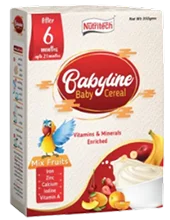
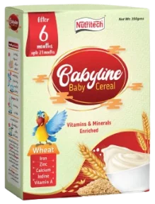
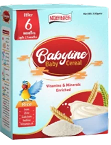
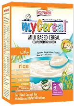
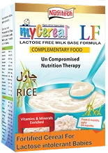

Mixed Fruit
Available In25g Sachet25g Sachet350g Soft Pack
Simple nourishment for curious little beginnings.
Explore the range ↓
Baby cereal is characterized by its fortified nutrients (especially iron and zinc), smooth, soft texture when mixed with liquid, and simple ingredients with no added sugar, salt, or artificial additives. It is a source of carbohydrates and other essential vitamins and minerals designed to be easily digestible for infants. @ Delxood we offer wide range of baby Cereals like :
Our Cereal is Creamy,smooth and highly digestable Cereal that ensure's the safe and sound start of semi solid diet with vital nutrients.
(Highly Digestable) (Smooth) (Creamy)Available in different flavors like Rice , Wheat , Mix Fruit , Semolina etc


Fortified Cereal For Lactose Intolerant Babies.
Fortified Cereal For Nutritional Rehabilitation


Explore a considered cereal range prepared for the changing needs of growing babies.